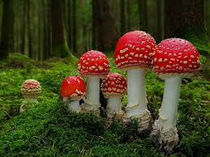

1. เห็ดระโงกหิน (Amanita phalloides) จัดเป็นเห็ดพิษร้ายแรงที่สุดชนิดหนึ่งในโลก มีรายงานผู้เสียชีวิตจากการรับประทานเป็นจำนวนมาก ลักษณะ หมวกเห็ด: ทรงกลม แบนเล็กน้อย สีเขียวอมเหลือง หรือเขียวมะกอก ผิวมันวาว ขอบหมวกเรียบ ครีบใต้หมวก: สีขาว ก้านเห็ด: สีขาว เรียวตรง มี วงแหวน อยู่ใต้หมวก โคนก้าน: มี เยื่อหุ้มฐาน (volva) ลักษณะคล้ายถุง อาการหลังรับประทาน คลื่นไส้ อาเจียน ท้องเสียรุนแรง อาจนำไปสู่ ตับวาย และเสียชีวิต ภายใน 1–2 วัน หากไม่รักษาทันเวลา
2. เห็ดแม่เบี้ยแดง (Amanita muscaria) เป็นเห็ดพิษที่มีชื่อเสียงจากลักษณะเด่น และมักปรากฏในการ์ตูนหรือวรรณกรรมแฟนตาซี ลักษณะ หมวกเห็ด: สีแดงสด มีจุดขาวทั่วหมวก (ลักษณะเด่นมาก) ครีบใต้หมวก: สีขาว ก้านเห็ด: สีขาว มีวงแหวน โคนก้าน: มีเยื่อหุ้มฐาน อาการหลังรับประทาน เวียนศีรษะ สับสน ประสาทหลอน กล้ามเนื้ออ่อนแรง พิษรุนแรงในเด็กและผู้สูงอายุ
3. เห็ดมันปูเทียม (Chlorophyllum molybdites) พบได้ทั่วไปในสนามหญ้า ที่โล่ง หรือพื้นที่รกร้างในเมือง ลักษณะ หมวกเห็ด: สีขาวหรือขาวปนเทา มีเกล็ดสีน้ำตาลเล็ก ๆ กระจายบนหมวก ครีบ: สีขาวเมื่ออ่อน เปลี่ยนเป็น เขียวอมเทา เมื่อแก่ (ลักษณะสำคัญ!) ก้าน: ขาว เรียวยาว มีวงแหวนตรงกลาง อาการหลังรับประทาน ท้องเสีย อาเจียน คลื่นไส้ รุนแรงมากแต่ไม่ถึงตาย อาการเกิดขึ้นภายใน 1–3 ชั่วโมง
4. เห็ดกรวยพิษ (Inocybe spp.) มีพิษต่อระบบประสาท พบในป่าเบญจพรรณ และสวนป่าทั่วไป ลักษณะ หมวก: รูปทรงคล้ายกรวย สีเหลือง น้ำตาลอ่อน หรือเทา ผิวหมวก: ขรุขระ มีขนเล็ก ๆ หรือเป็นสะเก็ด ครีบ: สีน้ำตาล มีกลิ่นฉุนคล้ายกลิ่นปลา อาการหลังรับประทาน เหงื่อออก น้ำลายมาก ตาพร่า กล้ามเนื้อกระตุก อาจหมดสติ หากรับประทานในปริมาณมาก
5. เห็ดไข่ตายซาก (Amanita virosa) เห็ดพิษรุนแรงอีกชนิดหนึ่ง มักพบในป่าชื้น ป่าเบญจพรรณ หรือป่าสน มีชื่อเรียกอีกอย่างว่า "เห็ดสวยแต่ร้าย" ลักษณะ หมวกเห็ด: สีขาวล้วน ทรงกลมหรือแบนเล็กน้อย ผิวลื่นมันวาว ขอบหมวกบาง อาจโปร่งแสงเล็กน้อยเมื่อโดนแสง ครีบใต้หมวก: สีขาว เรียงชิด ก้านเห็ด: สีขาว เรียวยาว มีวงแหวนใกล้ส่วนบนของก้าน โคนก้าน: มีเยื่อหุ้มฐาน (volva) เหมือนถุงหุ้มคล้ายเห็ดระโงกหิน อาการหลังรับประทาน อาการเริ่มแรก: คลื่นไส้ อาเจียน ท้องเสีย ปวดท้อง อาการรุนแรง: ตับและไตล้มเหลว อาจเสียชีวิตภายใน 2–5 วัน พิษของเห็ดชนิดนี้ คล้ายกับ Amanita phalloides แต่พบได้ในพื้นที่อากาศเย็นชื้น